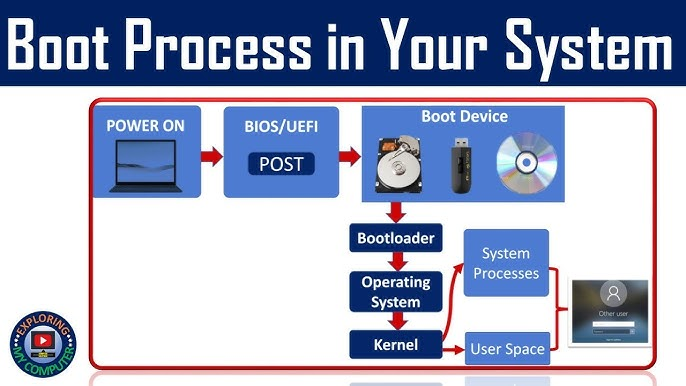

Motherboard is a crucial part of PC, connecting all needed componets to work together. It distrbutes power from PSU and includes slots for additional cards.
There are 3 main categories of ports:
BIOS is a firmware that initializes handware and loads the OS. UEFI is a new generation of BIOS, offering clickable interface with more features.
During the boot process several steps occur: POST, loading the bootloader, and OS initialization.
There are many possible problems that can happen during all processes. Common issues are hardware failure, BIOS misconfigurations, and power connecton problems. UEFI beep codes to help diagnose handware issues during startup.